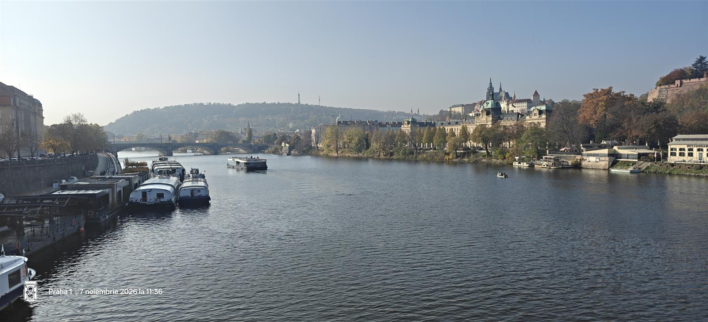
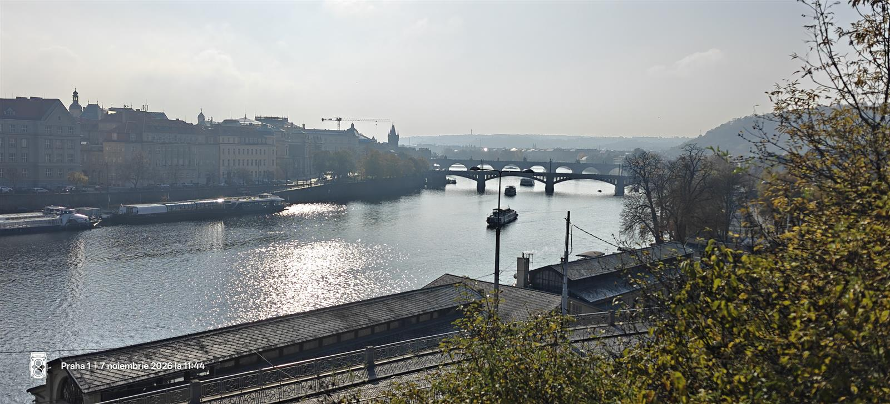
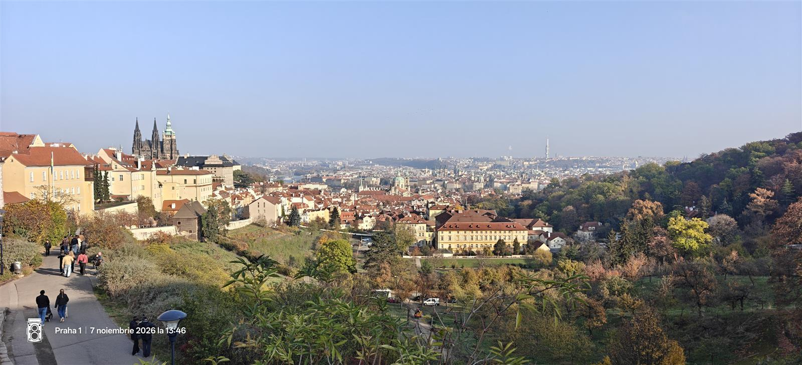
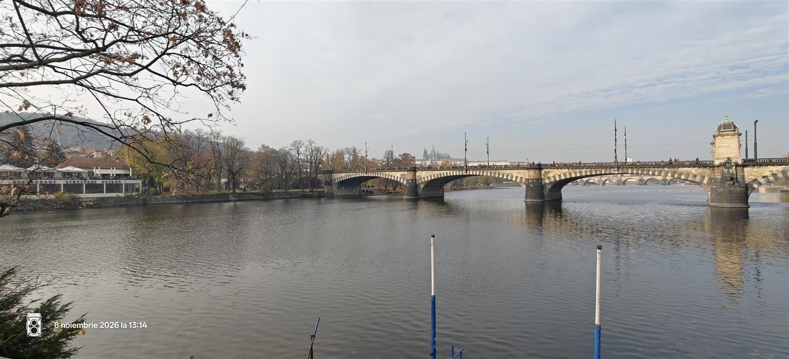
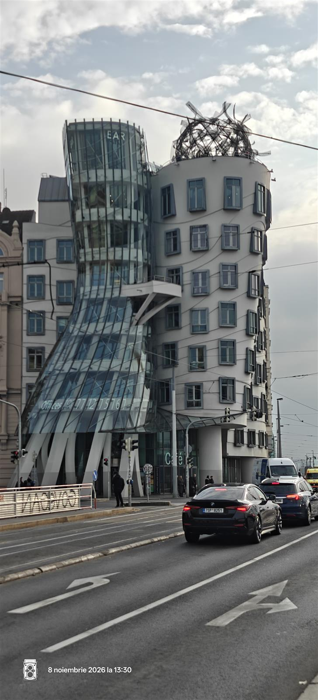
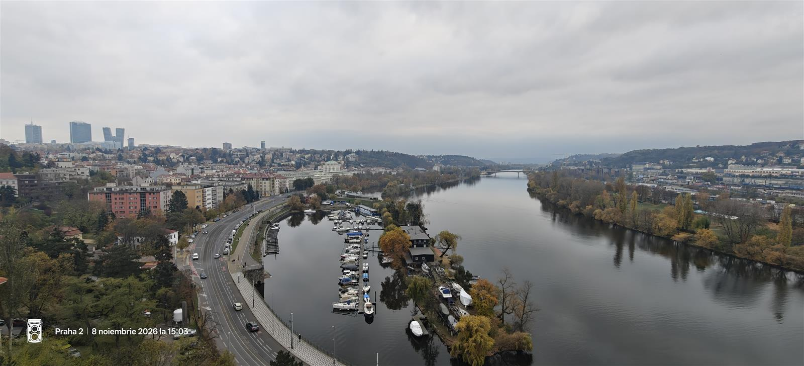
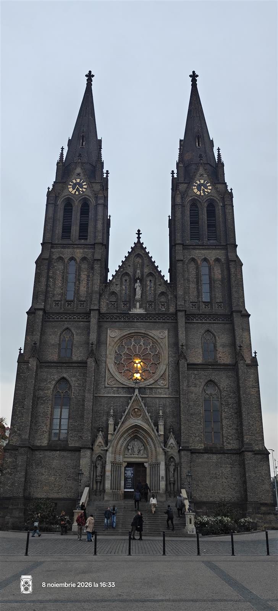

Cehia · Ghid de 2 zile
Praga în 2 zile: poduri, panorame și pauze bune
Praga se descoperă cel mai bine la pas: într-o zi bifezi centrul istoric și castelul, în cealaltă schimbi ritmul cu malul Vltavei și Vyšehrad. Încalță-te comod: pavajul arată minunat, dar nu negociază.

Ziua 1 · Orașul vechi, castelul și priveliștea
Piața Orașului Vechi → Pařížská și Josefov → Podul Carol → Malá Strana → Castel → Nový Svět → Strahov → Kampa
Începe în Piața Orașului Vechi, printre fațade colorate și turnuri, apoi caută Ceasul Astronomic. Pe Pařížská ajungi spre Josefov, fostul cartier evreiesc: merită să privești și deasupra vitrinelor, unde arhitectura fură spectacolul. Dacă vrei o pauză de cafea în zonă, harta propune Onesip Coffee.
Traversează Podul Carol spre Malá Strana și lasă-ți timp pentru priveliștea Vltavei. Pentru prânz, încearcă Lokál U Bílé kuželky, la câteva minute de pod: bucătărie cehească și bere la halbă. Verifică meniul și rezervă dacă vrei să fii sigur că prinzi loc.



Continuă în sus către Castelul din Praga și Catedrala Sf. Vitus. Dacă vrei să vizitezi interioarele, verifică dinainte programul oficial și lasă mai mult timp decât pentru o simplă plimbare prin curți. Apoi explorează străduțele liniștite din Nový Svět și urcă spre Strahov, pentru panoramă și o posibilă pauză la berăria mănăstirii.
Încheie coborând spre Kampa, lângă râu. Traseul e ambițios: poți scurta o oprire sau folosi tramvaiul când picioarele își depun cererea de concediu.
Ziua 2 · Cafea, Vltava și Vyšehrad
Café Louvre → Casa Dansatoare → Vyšehrad → Náměstí Míru → Piața Wenceslas
Începe cu un mic dejun la Café Louvre, o cafenea istorică potrivită pentru o dimineață fără grabă. De acolo, mergi spre Vltava și Casa Dansatoare: clădirea își merită numele, chiar dacă tu încă aștepți să-și facă efectul cafeaua.
Urmărește râul spre Vyšehrad, apoi urcă la fortăreață. Zidurile, parcul și priveliștile peste oraș fac urcușul să merite; caută și bazilica Sfinții Petru și Pavel. Rezervă timp pentru o pauză în zonă, apoi continuă spre Náměstí Míru și biserica Sf. Ludmila. Încheie în Piața Wenceslas, pentru o plimbare și cină. Harta sugerează Měšťanská Beseda sau U Fleků; verifică meniul și programul înainte.




De la aeroport: alege transportul public obișnuit
Recomandarea noastră: evită Airport Express dacă prețul contează. Pentru un adult, acesta costă 200 CZK până la gara principală. Alternativa este troleibuzul 59 până la Nádraží Veleslavín, apoi metroul A: un bilet de 90 de minute costă 46 CZK în aplicația PID Lítačka sau 50 CZK pe hârtie și acoperă schimbarea în perioada de valabilitate. Airport Express e direct, dar are tarif separat; diferența față de biletul din aplicație este de 154 CZK de persoană.
Verifică tarifele PID și traseele actuale spre aeroport înainte de plecare; durata și ruta potrivită depind de destinația ta. Validează biletul conform instrucțiunilor operatorului.
Harta traseului
Roșu pentru prima zi, albastru pentru a doua. Harta originală este o ilustrație orientativă, nu o hartă de navigație; orele și markerul de cazare reflectă planul din noiembrie 2026. Verifică traseul, programul și accesul obiectivelor înainte de plecare.